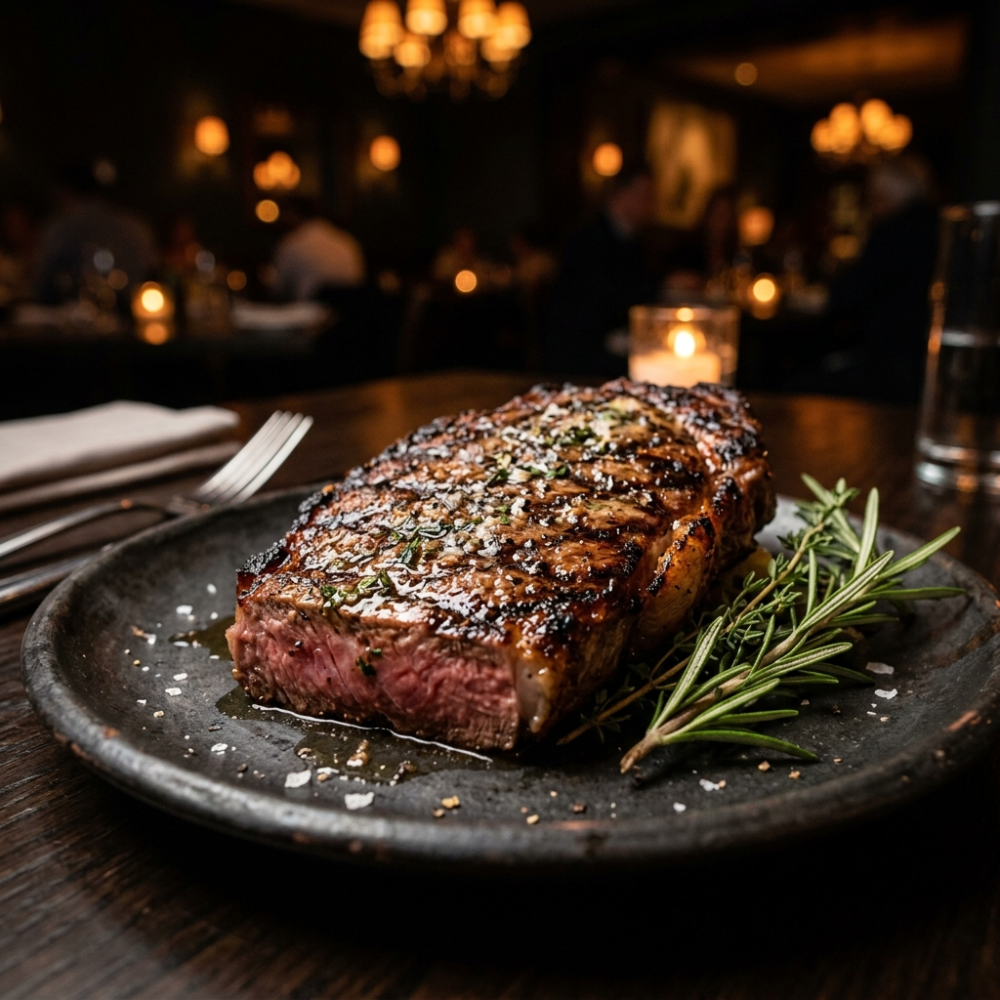

Our Philosophy
A Symphony of Smoke, Wood, & Wine
We believe that fine dining should feel like returning home. Our custom wood-fire hearth burns dry oak and pecan woods, infusing our culinary creations with a signature rustic aroma that pairs elegantly with our reserve vintages.
From the dynamic copper bar-tops to the low-glow handblown lighting fixtures, L'Ambre Bistro is designed to slow time down, inviting you to relish conversation, laughter, and culinary magic.
"Taste is not just an experience of the palate, it is a trigger for memory. We cook to make those memories unforgettable."